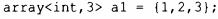
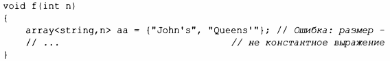
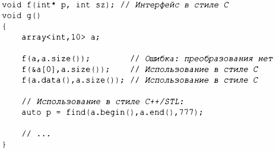
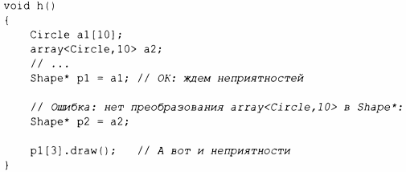

⇐13.4 Специализированные контейнеры 13.4.2 bitset⇒
array, определенный в заголовочном файле <array>, представляет собой последовательность элементов определенного типа с фиксированным размером, который указывается во время компиляции. Таким образом, массив может быть размещен со своими элементами в стеке, в объекте или в статической памяти. Элементы расположены в области видимости, где определен array. Лучше всего воспринимать array как встроенный массив с жестко определенным размером, без неявных, потенциально неожиданных преобразований к типам указателей и с несколькими вспомогательными функциями. Нет никаких накладных расходов (времени или памяти), связанных с использованием array по сравнению с использованием встроенного массива. array не следует модели "дескриптора элементов" контейнеров STL. Вместо этого array непосредственно содержит свои элементы.
array может быть инициализирован с помощью списка инициализации:
Количество элементов должно быть константным выражением:
Если вам нужен контейнер с переменным количеством элементов, используйте vector.
При необходимости array может быть явно передан в функцию в стиле С, ожидающую указатель. Например:
Зачем нам использовать array, если vector намного более гибкий? array менее гибок, поэтому он проще. Иногда существенную роль играет преимущество в производительности, которое достигается благодаря прямому доступу к элементам, выделенным в стеке, вместо выделения элементов в динамической памяти с косвенным обращением через vector (дескриптор) и последующим их освобождением. С другой стороны, стек является ограниченным ресурсом (особенно в некоторых встроенных системах), и его переполнение оказывается весьма неприятным.
Зачем использовать vector, если можно использовать встроенный массив? vector знает свой размер, поэтому его легко использовать с алгоритмами стандартной библиотеки и его можно копировать с помощью оператора=. Однако главная причина, по которой я предпочитаю массив, состоит в том, что он избавляет меня от неожиданных и неприятных преобразований в указатели. Рассмотрим следующий код:
Комментарий о неприятностях подразумевает, что sizeof(Shape)<size of (Circle), так что индексация Circle[] с использованием Shape* дает неверное смещение. Все стандартные контейнеры обладают этим преимуществом перед встроенными массивами.